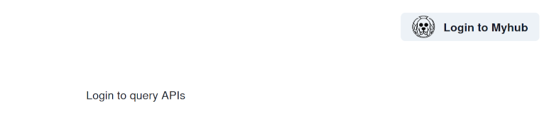
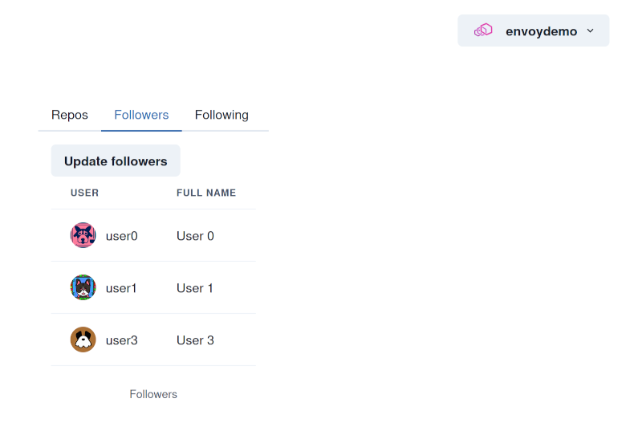
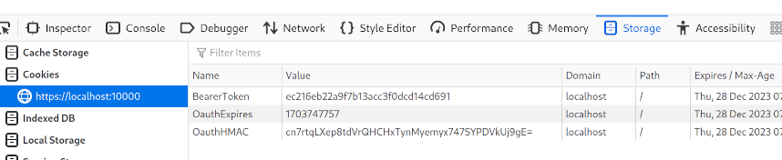
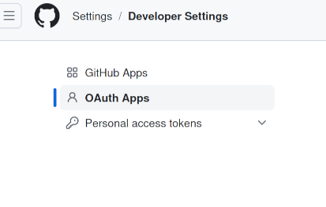
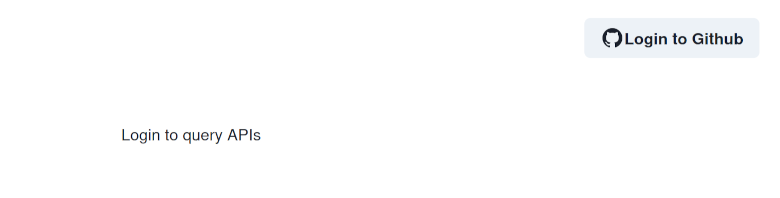

Single page React app (with OAuth)
This sandbox provides an example of building and developing a single page app with Envoy.
The sandbox covers a number of Envoy’s features, including:
Dynamic xDS filesystem updates
Websocket proxy
Gzip compression
TLS/SNI up/downstream connection/termination
Path/host rewrites
The app is built with React using Vite and demonstrates OAuth authentication using Envoy’s OAuth filter.
This covers a scenario where we want OAuth to both authenticate the user and provide credentials for further API interactions.
This is enabled by setting the OAuth configuration
forward_bearer_token
to true
36 redirect_uri: "%REQ(x-forwarded-proto)%://%REQ(:authority)%/authorize"
37 forward_bearer_token: true
38 pass_through_matcher:
39 name: ":path"
40 string_match:
Warning
Setting forward_bearer_token means the provided access token will be forwarded to any cluster/upstreams proxied by Envoy for this HTTP filter chain..
If untrusted upstreams are present, care will need to be taken to remove any sensitive cookies, such as BearerToken.
This can be achieved by setting request_headers_to_remove for the affected route.
A dummy “Myhub” backend is provided with a minimal OAuth provider and API for use in the example.
Setup is provided to build and update the app for production use, as well as a development environment with automatic code reloading.
The production and development environments are exposed on ports 10000 and 10001 respectively.
The Myhub backend can easily be replaced with Github or some other OAuth-based upstream service, and some guidance is provided on how to do this.
Step 1: Create a .local directory for sandbox customizations
Change to the examples/single-page-app directory, and create a directory to store sandbox customizations.
You can use .local which will be ignored by Git:
$ mkdir .local
Copy the ui/ directory to .local and set the UI_PATH. This will allow customizations without changing committed files.
$ cp -a ui .local
$ export UI_PATH=./.local/ui
Step 2: Generate an HMAC secret
Envoy’s OAuth filter requires an HMAC secret for encoding credentials.
Copy the default sandbox secrets to the customization directory, and create the required HMAC secret.
Replace MY_HMAC_SECRET_SEED with a phrase of your choosing:
$ cp -a secrets .local
$ HMAC_SECRET=$(echo "MY_HMAC_SECRET_SEED" | mkpasswd -s)
$ export HMAC_SECRET
$ envsubst < hmac-secret.tmpl.yml > .local/secrets/hmac-secret.yml
Export the path to the secrets folder for Docker:
$ export SECRETS_PATH=./.local/secrets
Step 3: Start the containers
First export UID to ensure files created by the containers are created with your user id.
Then bring up the Docker composition:
$ pwd
envoy/examples/single-page-app
$ export UID
$ docker compose pull
$ docker compose up --build -d
$ docker compose ps
NAME IMAGE COMMAND SERVICE CREATED STATUS PORTS
---------------------------------------------------------------------------------------------------------------------------------------------------------------------------------------------------
single-page-app-envoy-1 single-page-app-envoy "/docker-entrypoint.sh envoy -c /etc/envoy/envoy.yaml ..." envoy 2 minutes ago Up 2 minutes 0.0.0.0:10000-10001->10000-10001/tcp, :::10000-10001->10000-10001/tcp
single-page-app-myhub-1 single-page-app-myhub "/opt/myhub/app.py" myhub 2 minutes ago Up 2 minutes (healthy) 0.0.0.0:7000->7000/tcp, :::7000->7000/tcp
single-page-app-myhub-api-1 single-page-app-myhub-api "/opt/myhub/app.py" myhub-api 2 minutes ago Up 2 minutes (healthy)
single-page-app-ui-1 single-page-app-ui "/entrypoint.sh dev.sh" ui 2 minutes ago Up 2 minutes (healthy)
Step 4: Browse to the dev app and login
The development app should now be available at http://localhost:10001 and provide a login button:
Note
The dummy OAuth provider automatically trusts everyone as a hard-coded envoydemo user and redirects back to the app.
In a real world scenario the provider would authenticate and authorize the user before proceeding.
The sandbox is configured with an inverted match on pass_through_matcher.
This ignores all paths for OAuth other than:
/authorize.*/hub.*/login/logout.
37 forward_bearer_token: true
38 pass_through_matcher:
39 name: ":path"
40 string_match:
41 safe_regex:
42 regex: >-
43 ^\/(authorize.*|login|logout)$
44 invert_match: true
45 redirect_path_matcher:
46 path:
When a user clicks login the app initiates the OAuth flow by calling the /login path in Envoy.
This redirects the user to the OAuth provider for authorization/authentication with a further redirect link:
34 default_expires_in: 600s
35 authorization_endpoint: http://localhost:7000/authorize
36 redirect_uri: "%REQ(x-forwarded-proto)%://%REQ(:authority)%/authorize"
37 forward_bearer_token: true
38 pass_through_matcher:
39 name: ":path"
On successful authorization/authentication the user is redirected back via this link to the app with the necessary OAuth authorization code to proceed:
44 invert_match: true
45 redirect_path_matcher:
46 path:
47 prefix: /authorize
48 signout_path:
49 path:
50 exact: /logout
Envoy then uses this authorization code with its client secret to confirm authorization and obtain an access token for the user:
50 exact: /logout
51 credentials:
52 client_id: "0123456789"
53 token_secret:
54 name: token
55 sds_config:
56 path_config_source:
57 path: /etc/envoy/secrets/myhub-token-secret.yml
58 hmac_secret:
59 name: hmac
60 sds_config:
61 path_config_source:
1resources:
2- "@type": type.googleapis.com/envoy.extensions.transport_sockets.tls.v3.Secret
3 name: token
4 generic_secret:
5 secret:
6 inline_string: VERY_SECRET_KEY
Once logged in, you should be able to make queries to the API using the OAuth credentials:
Warning
Envoy’s OAuth implementation defaults to triggering the OAuth flow for all paths on the endpoint.
This can readily trigger an OAuth flood as assets are requested, and doom loops when the OAuth flows fail.
This can be avoided by restricting the paths that are used by the OAuth flow.
The sandbox example does this by inverting the pass_through_matcher to only match on the required OAuth paths.
Tip
The Myhub OAuth provider does not provide an expiry for issued credentials. Likewise Github may or may not depending on configuration. This is valid in terms of the OAuth2 specification.
If the authorization provider does not include an expiry, Envoy will, by default, fail the authentication.
This can be resolved by setting default_expires_in:
Step 5: Make API queries
For the sandbox app, forward_bearer_token is set, and so Envoy also passes the acquired access token back to the user as a cookie:
This cookie is then passed through Envoy in any subsequent requests to the proxied Myhub API:
Step 6: Live reload code changes
With your browser open on http://localhost:10001 make some change to the UI.
For example, you might change the page title:
$ sed -i s/Envoy\ single\ page\ app\ example/DEV\ APP/g .local/ui/index.html
The page should automatically refresh.
Likewise any changes to the Typescript app components in .local/ui/src/... should automatically reload in
the browser.
This is enabled in Envoy by allowing the proxied connection to the Vite development backend to be “upgraded” to use Websockets:
22 "@type": type.googleapis.com/envoy.extensions.filters.network.http_connection_manager.v3.HttpConnectionManager
23 upgrade_configs:
24 - upgrade_type: websocket
25 http_filters:
26 - name: envoy.filters.http.oauth2
27 typed_config:
You can view the logs for the development server with:
$ docker compose logs ui
single-page-app-ui-1 | Starting (dev.sh) with user: 1000 worker /home/worker
single-page-app-ui-1 | yarn run v1.22.19
single-page-app-ui-1 | $ vite --host 0.0.0.0 --port 3000
single-page-app-ui-1 |
single-page-app-ui-1 | VITE v5.0.10 ready in 119 ms
single-page-app-ui-1 |
single-page-app-ui-1 | ➜ Local: http://localhost:3000/
single-page-app-ui-1 | ➜ Network: http://172.30.0.5:3000/
You can also use docker attach should you want to interact with the process.
Step 7: Log out of the app
On signing out, the app makes a request to Envoy’s configured signout_path:
47 prefix: /authorize
48 signout_path:
49 path:
50 exact: /logout
51 credentials:
52 client_id: "0123456789"
53 token_secret:
This clears the cookies and the credentials stored by Envoy before returning the user to the app home page.
The app also clears any stored data associated with the user session:
Step 8: Build production assets
First, create and set a custom xds/ directory.
You will need to rebuild Envoy to ensure it sees the correct directory:
$ mkdir .local/production
$ cp -a xds .local/production/
$ export XDS_PATH=./.local/production/xds
$ docker compose up --build -d envoy
You can build the production assets for the app with the following:
$ docker compose run --rm ui build.sh
After building the React app, the sandbox script automatically updates Envoy’s configuration with the static routes required to serve the app.
You can view the generated routes:
$ jq '.resources[0].filter_chains[0].filters[0].typed_config.route_config.virtual_hosts[0].routes' < .local/production/xds/lds.yml
[
{
"match": {
"path": "/assets/index-dKz4clFg.js"
},
"direct_response": {
"status": 200,
"body": {
"filename": "/var/www/html/assets/index-dKz4clFg.js"
}
},
"response_headers_to_add": [
{
"header": {
"key": "Content-Type",
"value": "text/javascript"
}
}
]
},
{
"match": {
"path": "/myhub.svg"
},
"direct_response": {
"status": 200,
"body": {
"filename": "/var/www/html/myhub.svg"
}
},
"response_headers_to_add": [
{
"header": {
"key": "Content-Type",
"value": "image/svg+xml"
}
}
]
},
{
"match": {
"prefix": "/"
},
"direct_response": {
"status": 200,
"body": {
"filename": "/var/www/html/index.html"
}
},
"response_headers_to_add": [
{
"header": {
"key": "Content-Type",
"value": "text/html"
}
}
]
}
]
Note
This setup configures Envoy to store the necessary files in memory.
This may be a good fit for the single page app use case, but would not scale well for many or large files.
Tip
When you make changes to the javascript/typescript files rebuilding the app creates new routes to the compiled assets.
In this case Envoy will update via xDS and use the newly routed assets.
If you make changes only to assets that do not get a new route - e.g. index.html - you
should both rebuild the app and restart Envoy after:
$ docker compose run --rm ui build.sh
$ docker compose restart envoy
Step 9: Browse to the production server
You can browse to this server on https://localhost:10000
Unlike the development endpoint the production endpoint is configured with:
TLS (self-signed)
Gzip compression
Statically served assets
Step 10: Setup Github OAuth/API access
Tip
Setup for Github is explained in this sandbox, but it should be easy to adapt these instructions for other providers.
You will need to set up either a Github OAuth or full app. The latter provides more control and is generally preferable.
This can be done either at the user or organization levels:
Note
When setting up Github OAuth you will need to provide the redirect URI
This must match the configured URI in Envoy
For the purposes of this example set it to https://localhost:10000.
You will need a separate OAuth app for development.
Depending on your use case, you may also want to set up any permissions required for your app.
Once you have this set up, you will need the provided client id and secret.
Step 11: Update Envoy’s configuration to use Github
Add the Github provided client secret:
$ TOKEN_SECRET="GITHUB PROVIDED CLIENT SECRET"
$ export TOKEN_SECRET
$ envsubst < secrets/token-secret.tmpl.yml > .local/secrets/github-token-secret.yml
The file created will be available in the container under /etc/envoy/secrets
Tip
The following instructions use sed, but you may wish to make the necessary replacements
using your editor.
For each configuration there are 2 places to update, one for the development listener and the other for production.
Create a copy of the Envoy config and tell Docker to use it:
$ cp -a envoy.yml .local/envoy.yml
$ export ENVOY_CONFIG=.local/envoy.yml
For the OAuth configuration in .local/envoy.yml set the Github provided client secret:
$ sed -i s@client_id:\ \"0123456789\"@client_id:\ \"$GITHUB_PROVIDED_CLIENT_ID\"@g .local/envoy.yml
Replace the
authorization_endpoint
with https://github.com/login/oauth/authorize:
$ sed -i s@authorization_endpoint:\ http://localhost:7000/authorize@authorization_endpoint:\ https://github.com/login/oauth/authorize@g .local/envoy.yml
Replace the
token_endpoint >
uri
with https://github.com/login/oauth/access_token:
$ sed -i s@uri:\ http://myhub:7000/authenticate@uri:\ https://github.com/login/oauth/access_token@g .local/envoy.yml
Point the
token_secret >
path
to the github-token-secret.yml created above:
$ sed -i s@path:\ /etc/envoy/secrets/myhub-token-secret.yml@path:\ /etc/envoy/secrets/github-token-secret.yml@g .local/envoy.yml
Replace the host rewrites:
$ sed -i s@host_rewrite_literal:\ api.myhub@host_rewrite_literal:\ api.github.com@g .local/envoy.yml
Finally add (or replace the myhub* clusters with) the github and github-api clusters
Github configured clusters:
$ cat _github-clusters.yml >> .local/envoy.yml
Step 12: Update the app configuration to use Github
We need to tell the app the name of the provider.
Currently providers for Myhub and Github are implemented:
7export const AuthProviders: IAuthProviders = {
8 "myhub": {
9 "name": "Myhub",
10 "icon": MyhubIcon},
11 "github": {
12 "name": "Github",
13 "icon": GithubIcon}}
If you followed the above steps, the Vite app environment settings are read from .local/ui/.env*:
$ echo "VITE_APP_AUTH_PROVIDER=github" > .local/ui/.env.local
Step 13: Rebuild the app and restart Envoy
$ docker compose run --rm ui build.sh
$ docker compose up --build -d envoy
Tip
Note the use of up --build -d rather than restart.
This is necessary as we have changed envoy.yml which is loaded into the container at build time.
Browse to the production server https://localhost:10000
You can now log in and use the Github APIs.:
See also
- Envoy OAuth filter
Configuration reference for Envoy’s OAuth filter.
- Envoy OAuth filter API
API reference for Envoy’s OAuth filter.
- OAuth2 specification
OAuth 2.0 is the industry-standard protocol for authorization.
- React
The library for web and native user interfaces.
- Vite
Next Generation Frontend Tooling.
- Envoy Gzip Compression API
API and configuration reference for Envoy’s gzip compression.
- Securing Envoy quick start guide
Outline of key concepts for securing Envoy.
- Github OAuth apps
Information about setting up Github OAuth apps.
- Github API
References for Github’s APIs.